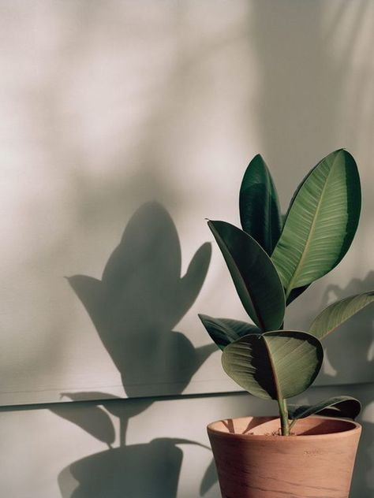
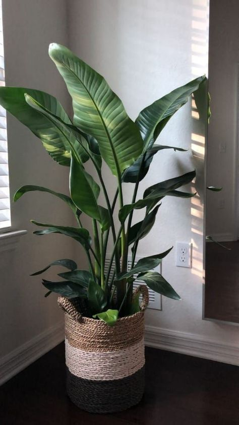
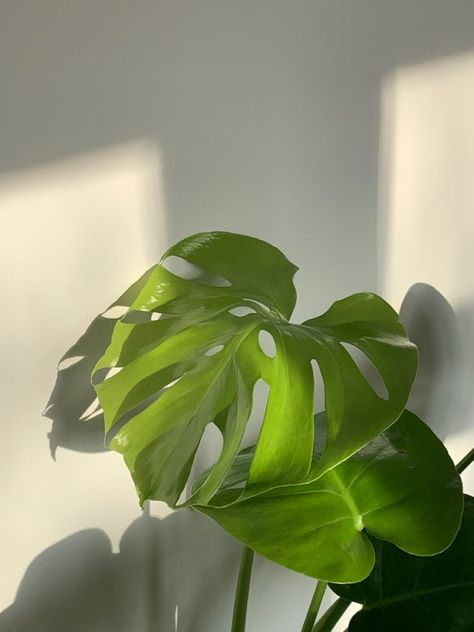

TIPS Y CUIDADOS
Planta de interior o de exterior :
Los siguientes consejos serán más universales, pero la regla de oro es conocer bien nuestra planta, por eso está la primera. Aunque la mayoría de plantas que se cultivan habitualmente comparten muchas de sus necesidades, cada especie puede ser un mundo y algunas tienen necesidades muy concretas y específicas. Entérate de cuál es la especie de tus plantas y cuáles son sus necesidades particulares. Por ejemplo, no será lo mismo averiguar cómo cuidar una planta de interior que una planta de exterior.
Riego :
La gran mayoría de plantas no tolera el encharcamiento en su tierra o sustrato, por lo que regarlas en cantidades excesivas es una de las principales causas de la muerte de las plantas en el hogar. Es mucho mejor regar a menudo y en pequeñas cantidades que hacerlo poco y mucho, aunque esto sea más fácil. Las plantas resistentes a la sequía, como los cactus y crasas en general, son especialmente vulnerables al encharcamiento.
Humedad del suelo
Otro de los cuidados básicos de las plantas es comprobar la humedad del suelo donde están plantadas. Si no estás seguro de si tu planta necesita riego o no, clava un pequeño palillo o incluso un dedo en el sustrato, junto a la planta y sin dañarla. Si la tierra está húmeda se quedará pegada al palillo o a tu dedo y, normalmente, querrá decir que aún no necesita riego.
TE DEJAMOS ESTOS VIDIOS DE CUIDADOS PARA MAS INFO
TE DEJAMOS ESTE BLOG PARA QUE TENGAS MAS INF
FICUS LYRATA
FICUS LYRATA
Altura de Producto: 75cm
Lugar: luminoso, aunque resiste en sitios con lama calidad de iluminación y con poca calefacción Riego: moderado suelo liviano con buen drenaje Planta ideal para iniciantes en jardinería
DIEFENBACHI
DIEFENBACHIA
Interior luminoso, o exterior en cualquier exposición protegida del viento.
Herbácea que desarrolla gran tamaño, con grandes hojas similares a un bananero. No es conveniente ubicarla en lugares ventosos porque se acelera el desgarro natural de sus hojas. Genera hijuelos desde la base y va creciendo en ancho. Necesita contenedores amplios y mucho espacio.
FICUS BENJAMINA

FICUS BENJAMINA
Interior luminoso, aunque tolera condiciones de baja luminosidad, o exterior protegido a la sombra
es una planta de crecimiento vertical, por lo general se comercializan uno o varios troncos por maceta con brotes en el extremo. Puede llegar a los 2 m de altura. Las hojas son alargadas con una franja central más clara. Es una de las plantas de interior más longevas y resistentes.
BEGONIA

BEGONIA
UBICACIÓN: Exterior a media sombra. Cuanto más baja es la temperatura más resisten el sol pleno.
Plantas bulbosas que forman una mata con hojas acorazonadas. Brotan en Otoño y florecen en Invierno y Primavera. En Verano entran en dormición y pierden gran parte del follaje, se pueden conservar de un año al otro dejándolas en la sombra y regándolas esporádicamente. El riego debe ser con agua a temperatura ambiente, no hace falta colocarles hielo.
SANSEVIERIA

SANSEVIERIA
UBICACIÓN: Interior luminoso, o exterior en zonas libre de heladas.
Forma una mata de hojas rígidas alargadas como espadas verde oscuro con bandas transversales grisáceas. La variedad ‘Laurentii’ tiene el borde de la hoja de color amarillo. Tolera interiores poco luminosos siempre y cuando la frecuencia de riego sea muy baja. Resiste ambientes cerrados y secos. Si está en exterior lo ideal es que esté a media sombra, con sol directo intenso las hojas se suelen tornar amarillentas.
OREJA DE ELEFANTE
OREJA DE ELEFANTE
UBICACIÓN: Interior luminoso, o exterior a media sombra/sombra, protegida del viento.
planta trepadora en su hábitat natural, no hay que cortar sus largas raíces colgantes. Sus hojas están perforadas naturalmente para dejar pasar la luz y ofrecer menor resistencia a la lluvia y el viento. De gran desarrollo, es necesario ubicarla en lugares amplios.